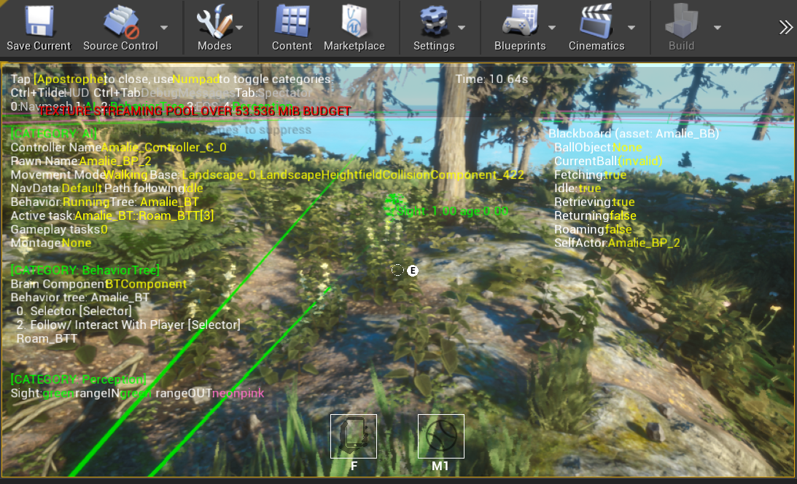

Dog Walking Simulator
UE4
Blueprint
Intro
Amalie (or Dog Walking Simulator) is a project I am currenty developing for the Safe in our World charity. Developers and artists were given a brief at Norwich University of the Arts for an opportunity to create something for Safe in our World. The brief was tailored to walks in nature which interested me a lot, as I always used to walk my dog when I was younger and I've always wanted to create some sort of Dog AI for a video game. So naturally I had to do this.
Trailer

This is the behaviour tree for Amalie (the dog) in Dog Walking Simulator. Right now Amalie can Roam, Idle/ Interact, Fetch (or chase ball), and then return with the ball to the player.
When my custom task ‘Roam’ is being executed in the behaviour tree, Amalie will pick a point within the radius specified around the player every 1.5 seconds. This point within a radius is calculated by getting the players current location and using ‘Random float in range’ math function and setting the minimum to be players current position –400cm ( as one unreal unit is equal to one centimeter), and the same is done for the maximum except adding 400cm to the players current position. This is done for both the X and the Y axis but not the Z as we don’t want the dog to start walking to the sky or potentially sink through the floor. This information is then passed into a simple move function and now the dog can roam around the player. It is also important to mention that the dog only roams around the player if the player is moving. Which brings me onto the idle function.
The custom task ‘Idle’ only executes when ‘Idle’. ‘Idle’ is a blackboard boolean key that the AI controller can change. To do this there is a very simple check, the AI controller simply checks every frame to see if the velocity of the player character is less than or equal to 0. If true then ‘Idle’ is set and the dog will sit idly waiting. If false then the dog will continue to roam.
To give a sense of realism I decided to experiment with AI perception on my AI dog. The dog has a cone of vision in front of it, like in real life, and it can now see game objects in the level and tell what they are. So, I programmed it to see the ball you can see that the dog can in fact see the ball. But, I also wanted the dog to chase the ball after seeing it.
So when the dog sees the ball, it casts and checks to see if the ball is valid. If it is valid, a custom function that I made called ‘Set Ball Vector’ then gets executed (This is all happening within the AI controller).
The custom function ‘Set Ball Vector’ essentially sets the ball that the dog has just now seen as the current ball. ‘Current Ball’ is a variable in the AI controller.
Now that ‘Current Ball’ is set. The Fetch_BTT task can now cast to the AI controller and get the current balls location. After getting the location, it simply calls an AI move to function and the dog will now move towards the current balls current location. You may also notice that the task executes every tick (frame). This is because the ball that is being thrown by the player will constantly keep rolling/ moving so this task needs to keep updating the position of the ball so the dog can retrieve it.